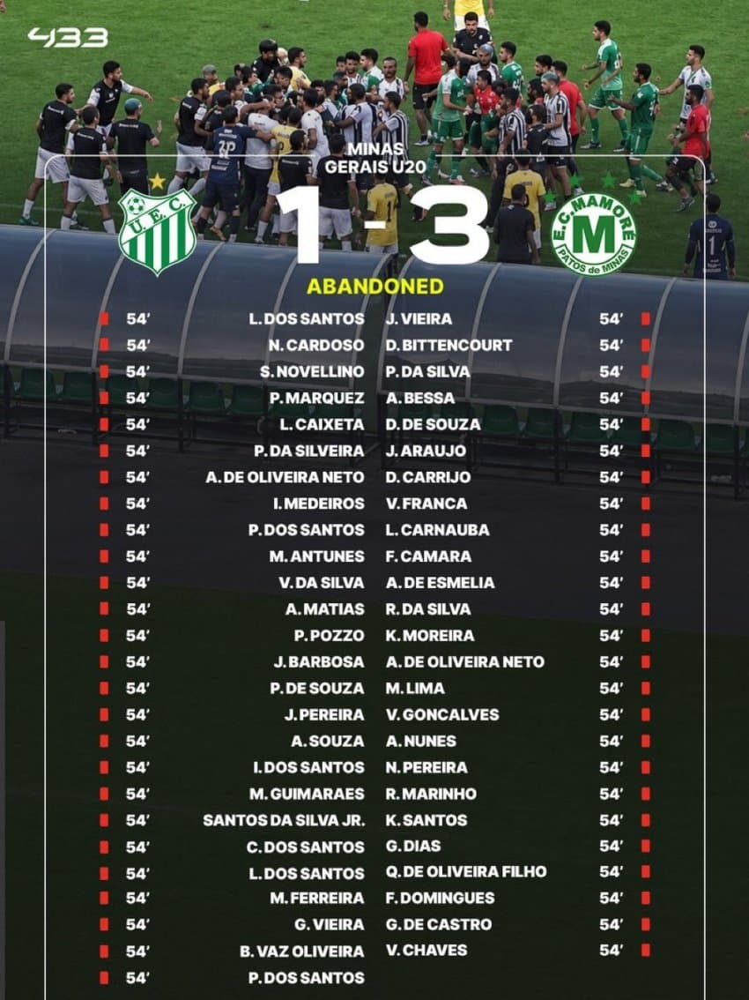
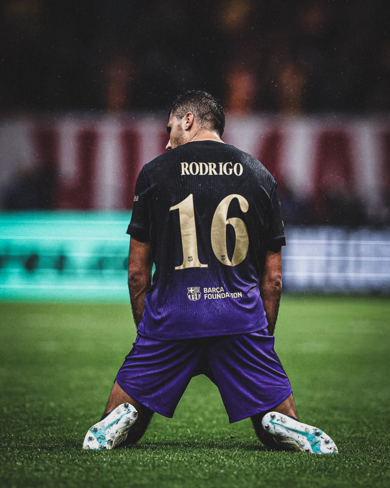
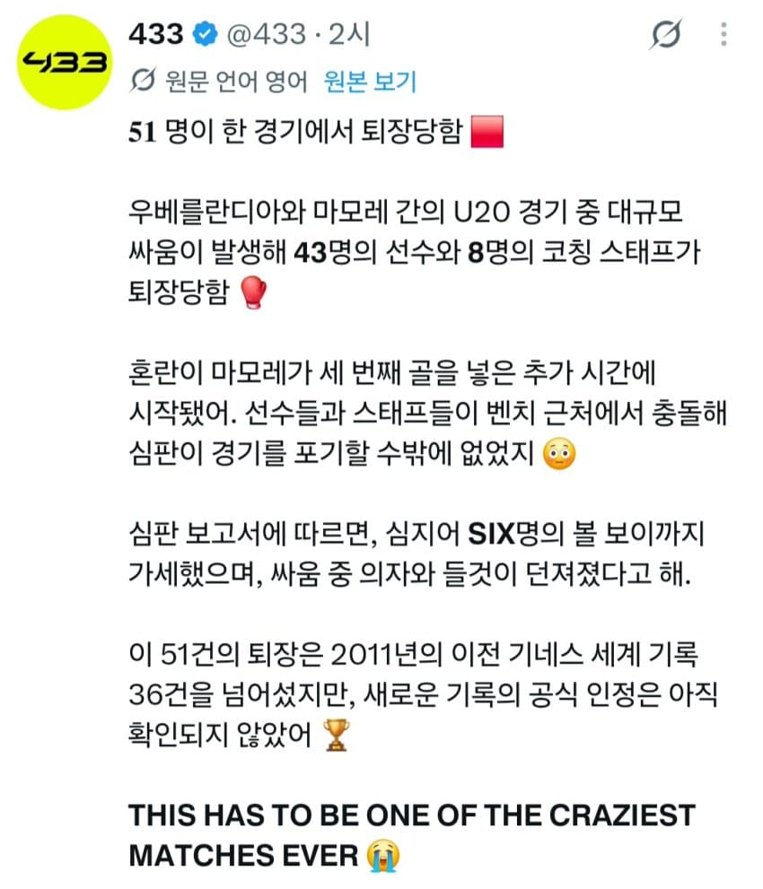
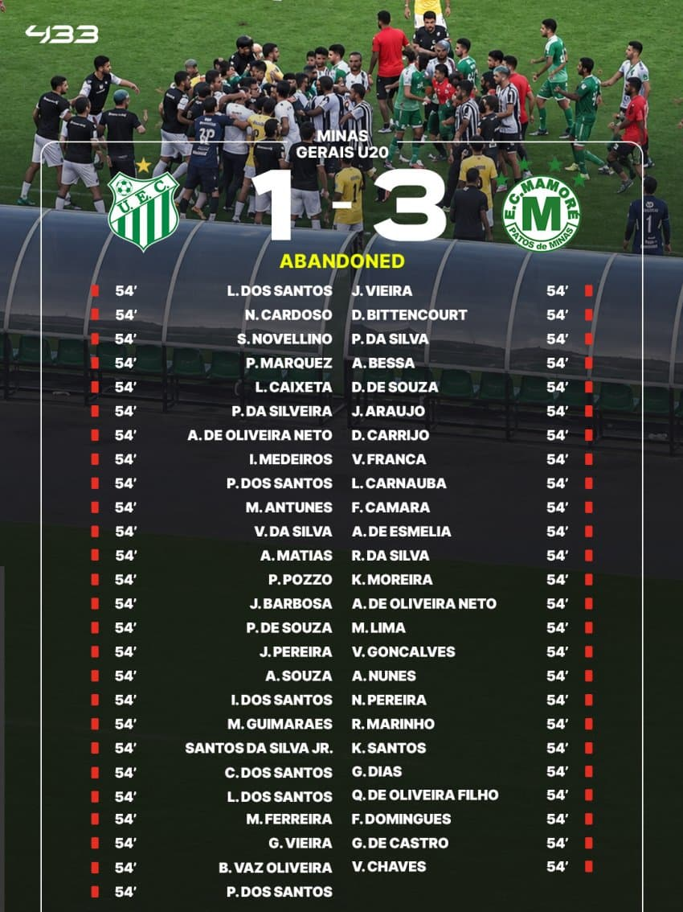

코칭스텝물리치료사 수뇌부들도 퇴장 당했다함 ㅋㅋㅋㅋ
난투극만 30분가까이 했다네
브라질 축구리그 난투극
선수43명 스태프8명 퇴장 + 볼보이6명도 징계



실제 싸우는 영상
브라질 미나스제라이스주 U20 챔피언십 2부 리그 준결승 1차전, 우베를란지아 대 마모레 경기.
얼마 안됨 11월 1일 경기임.
우베를란지아 홈구장에서 열린 경기고 경기 자체는 마모레가 3대1로 이겼음.
찾아보니까 후반에 마모레가 세 번째 골을 넣은 뒤에 마모레 선수가 우베를란지아 벤치를 도발하고 우베를란지아 골키퍼 코치가 경기장에 뛰어들어 그 선수를 밀치면서 패싸움이 시작됨.
퇴장은 총 51명
심판 보고서 기준으로 선수 43명 + 코칭스태프 8명.
팀별로는 우베를란지아 22명, 마모레 29명.
심판을 위협한 우베를란지아 구단 임원 2명도 퇴장 당해서 엄밀히 말하면 53명이긴 함 ㅋㅋ
패싸움 전에도 이미 경기 중에 3명이 퇴장당한 경기라 과열될대로 된 경기인듯.
누적 치즈 2장으로 퇴장 2명, 그리고 상대 골키퍼 배를 주먹으로 쳐서 다이렉트 1명.
나머진 싹 다 패싸움 하다가 올 퇴장 처리
패싸움 난리라서 심판이 레드카드를 싹 다 현장에서 꺼내지는 못하고 경기 후 보고서에 퇴장을 기록하는 방식으로 처리한 경기.
곧 공식 최다 퇴장 경기로 기네스에 등재될듯.
댓글
댓글 보관 대기 중입니다. 원문 응답 오류가 있으면 다음 실행에서 다시 수집합니다.